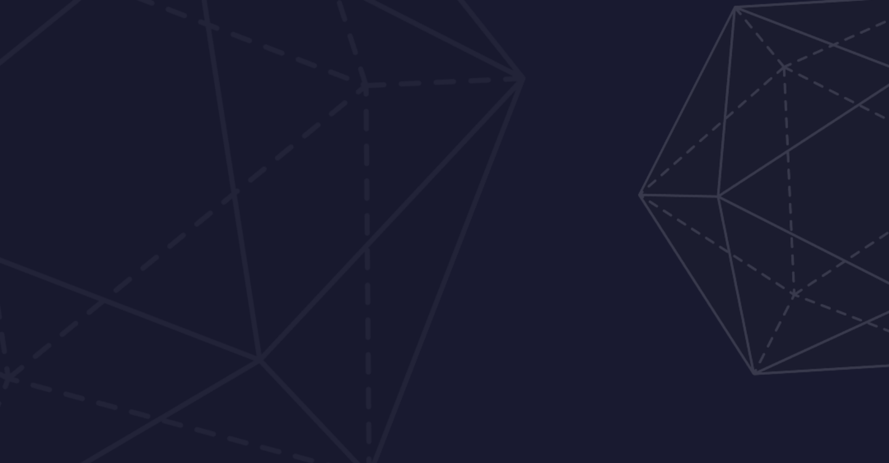
AI Safety курс по оценке LLM: подходы, бенчмарки и методология
Курс посвящен оценке LLM и агентных систем. Формирует системное понимание принципов, инструментов и практик оценки нейросетей. А также учит разрабатывать для них надёжные и содержательные метрики.
Менторы проектов
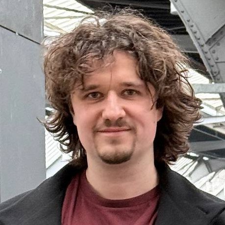
Андрей Матвеякин
Программист в Apollo Research, ex-Google
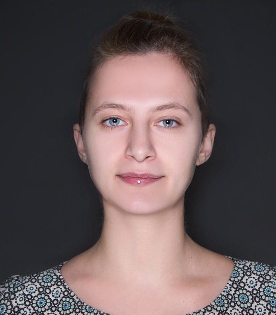
Елена Еричева
Ex-METR, исследовательница evals и mech interp мультимодальных/LLM-систем
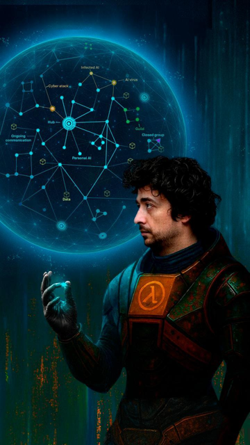
Андрей Серяков
Independent researcher, ex-CERN, популяризатор науки
Игорь Иванов
Visiting Researcher в Meridian Cambridge
Анна Шабанова
Исследователь и менеджер Лаборатории ИИ СКОЛКОВО
Борис Цейтлин
Автор ТГ канала 'Борис опять', Ex-eBay, ex-Yandex, преподавал машинное обучение в ВШЭ, ОТУС и Deep Learning School
Семен Стешин
ML исследователь. Работаю в https://sage-future.org/ вместе с авторами AI-2027, чтобы помочь им подумать про ближайшее будущее. Больше тут: https://stesh.in/
Алексей Донцов
Исследователь в AIRI, занимаюсь интерпретируемостью LLM: пишу статьи и читаю лекции
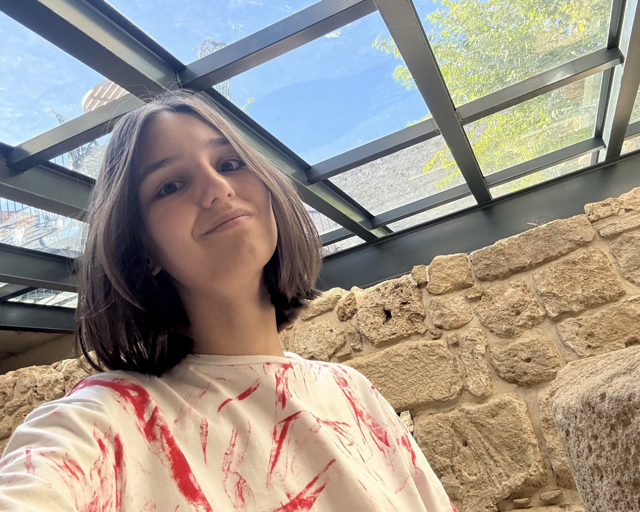
Александра Рыбакова
Аналитик-разработчик в Яндексе, автор учебных курсов по теории ИИ и AI Safety, магистр ВМК МГУ
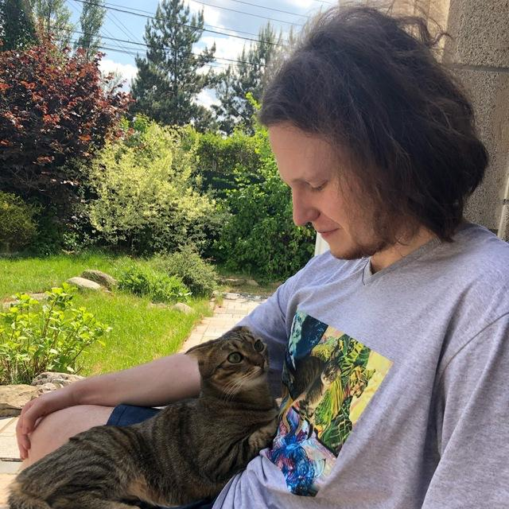
Denis Moiseenko
ML-инженер, исследователь, Preference Model, ex-SPAR, ex-Algoverse
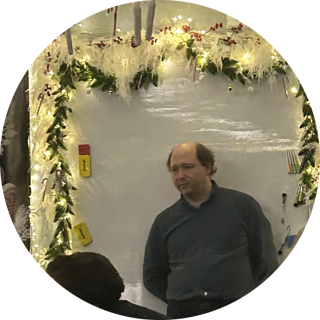
Олег Лариков
Преподаватель ЦДО Моноид, программист, исследователь безопасности ИИ, популяризатор науки и рационального мышления
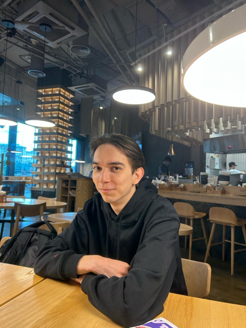
Алексей Горбачев
Магистрант ВМК МГУ. Старший аналитик в Т-банке. Разработчик материалов для курсов по AI Safety
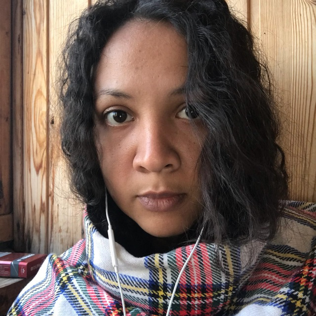
Слава Меритон
Преподаватель ЦДО Моноид, аспирант, автор курсов по AI Safety, соавтор канала Start in AI Safety
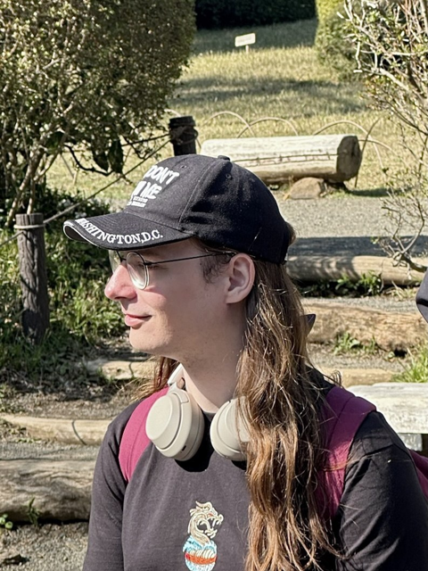
Антон Чайников
Преподаватель ЦДО Моноид, ex-Kaspersky, автор курсов по теории ИИ и AI Safety, магистр НИУ ВШЭ
Сабрина Садиех
XAI/Ai security Researcher, магистрант НИУ ВШЭ, преподаватель и автор курсов по explainable AI
Артем Карпов
Independent researcher, scheming (deceptive) behavior of LLM agents
Эдуард Капелко
ML инженер, Quant researcher, ныне аспирант по математике НАН РБ. Разработчик материалов для курсов по AI Safety, пишу статьи.
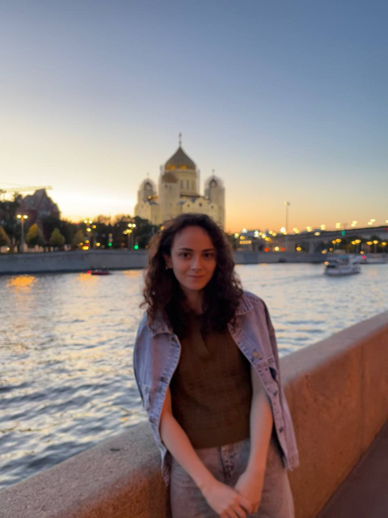
Джамиля Эркенова
Дата аналитик-инженер в Сбере, занимаюсь рисерчем в AI Safety
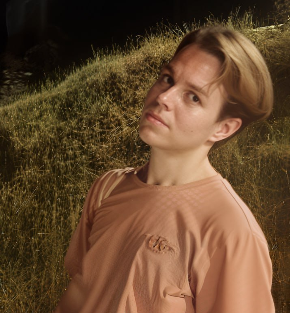
Сергей Кудряшов
Рисерчер, аспирант ВШЭ
Михаил Селезнёв
Научный сотрудник AIRI, аспирант Сколтеха, MATS 5.0, CHAI 2024 Intern, преподаватель ЦДО Моноид
Участники научатся:
- Анализировать существующие бенчмарки и метрики (MMLU, TruthfulQA, BIG-bench и др.);
- Применять современные инструменты (работа с Inspect AI, знакомство с OpenAI Evals, Im-eval-harness, Ragas);
- Проектировать собственные оценки для LLM и агентов;
- Разрабатывать дизайн эксперимента и проводить исследования в области evals;
- Понимать ограничения различных подходов к evals.
По окончании курса:
- Проект в портфолио;
- Сертификат о прохождении курса;
- Абонемент на 3 месяца коворкинга в ЦДО Моноид;
- Лучшим студентам предоставляется карьерная консультация и приглашение на онлайн-конференцию.
Содержание курса:
Теоретическая часть:
- Основные идеи и концепции в evals;
- Подходы и cтандарты;
- Инструменты, метрики и разработка бенчмарков;
- Оценка агентских систем;
- Ограничения, сравнение подходов и открытые вопросы области.
Практика:
- Настройка среды и запуск базовой оценки;
- Реализация стандартного бенчмарка (частичный запуск MMLU);
- Проектирование и реализация кастомной оценки (на примере набора данных Jigsaw);
- Сборка и тестирование простого ReAct-агента;
- Работа в рамках специализированных треков для подготовки к проектной части.
Курс состоит из двух этапов: учебного и проектного.
- Учебный (5 недель):
- Изучаются теоретические основы evals и практика по построению оценок LLM и агентов, проходят еженедельные групповые встречи, семинары, консультации и коворкинги;
- Еженедельные задания:
- Техническое: ноутбуки по темам курса — реализовать и проанализировать методы, разобранные на неделе;
- Концептуальное: короткая исследовательская заметка с обоснованием методологических решений и анализом их сильных и слабых сторон;
- Нагрузка: 15 часов в неделю;
- Проектный (5 недель):
- Работа с ментором над индивидуальным или командным проектом (до 4 человек);
- Нагрузка: от 10 часов в неделю.
Требования к участникам:
- Навыки программирования на Python;
- Базовое понимание концепций AI Safety или готовность пройти 6-часовой экспрес-курс;
- Опыт в Evals приветствуется, но не является обязательным;
- Опыт в проведении исследований и дизайне экспериментов приветствуется, но не является обязательным.
Расписание курса:
Регистрация, отбор и подготовка
- 23 января по 28 февраля - Приём заявок;
- 1 марта - Дедлайн ответа на заявку;
- 9, 14 марта — Вводная встреча (дата на выбор);
- 10 марта - Публикация материалов к первым занятиям;
Образовательная часть
- 16 марта по 19 апреля - Учебный этап (5 недель);
- 25, 26 апреля - Выпускной;
Проектная часть
По согласованию с ментором возможен перерыв на время сессии и продолжение в июле
- 20 апреля по 4 мая - Подача заявок на проектный этап;
- 10 мая - Дедлайн ответов на заявки;
- 11 мая по 14 июня - Проектный этап (5 недель);
- 20, 21 июня - Защита проектов;
- Авторы лучших проектов получат приглашение на участие в онлайн конференции в июле.
Дополнительная информация:
- Курс бесплатный, но количество мест ограничено, поэтому заявки отбираются на конкурсной основе;
- Формат: либо оффлайн в Москве, либо онлайн.